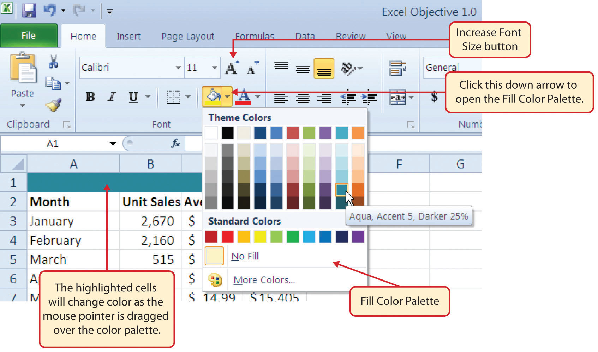

This section addresses formatting commands that can be used to enhance the visual appearance of a worksheet. It also provides an introduction to mathematical calculations and charts. The skills introduced in this section will give you powerful tools for analyzing the data that we have been working with in this workbook and will highlight how Excel is used to make key decisions in virtually any career.
Follow-along file: Excel Objective 1.0 (Use file Excel Objective 1.04 if you are starting with this skill.)
Enhancing the visual appearance of a worksheet is a critical step in creating a valuable tool for you or your coworkers when making key decisions. The following steps demonstrate several fundamental formatting skills that will be applied to the workbook that we are developing for this chapter. Several of these formatting skills are identical to ones that you may have already used in other Microsoft applications such as Microsoft® Word® or Microsoft® PowerPoint®.
Click the Bold button in the Font group of commands in the Home tab of the Ribbon (see Figure 1.36 "Font Group of Commands").
Figure 1.36 Font Group of Commands

Bold Format
Click the Underline button in the Font group of commands in the Home tab of the Ribbon (see Figure 1.36 "Font Group of Commands"). Notice that there is a drop-down arrow next to the Underline button. This is for selecting a double underline format, which is common in careers that deal with accounting or budgeting activities.
Italics Format
Underline Format
Format Column Headings and Totals
Applying formatting enhancements to the column headings and column totals in a worksheet is a very important technique, especially if you are sharing a workbook with other people. These formatting techniques allow users of the worksheet to clearly see the column headings that define the data. In addition, the column totals usually contain the most important data on a worksheet with respect to making decisions, and formatting techniques allow users to quickly see this information.
Click the Comma Style button in the Number group of commands in the Home tab of the Ribbon (see Figure 1.37 "Number Group of Commands").
Figure 1.37 Number Group of Commands
Click the down arrow next to the Fill Color button in the Font group of commands in the Home tab of the Ribbon (see Figure 1.38 "Fill Color Palette").
Figure 1.38 Fill Color Palette
Pound Signs (####) Appear in Columns
When a column is too narrow for a long number, Excel will automatically convert the number to a series of pound signs (####). In the case of words or text data, Excel will only show the characters that fit in the column. However, this is not the case with numeric data because it can give the appearance of a number that is much smaller than what is actually in the cell. To remove the pound signs, increase the width of the column.
Figure 1.39 "Formatting Techniques Applied" shows how the Sheet1 worksheet should appear after the formatting techniques are applied.
Figure 1.39 Formatting Techniques Applied

Follow-along file: Excel Objective 1.0 (Use file Excel Objective 1.06 if you are starting with this skill.)
The skills presented in this segment show how data are aligned within cell locations. For example, text and numbers can be centered in a cell location, left justified, right justified, and so on. In some cases you may want to stack multiword text entries vertically in a cell instead of expanding the width of a column. This is referred to as wrapping textStacking multiword text entries vertically in a cell.. These skills are demonstrated in the following steps:
Click the Center button in the Alignment group of commands in the Home tab of the Ribbon (see Figure 1.40 "Alignment Group in Home Tab"). This will center the column headings in each cell location.
Figure 1.40 Alignment Group in Home Tab

Click the Wrap Text button in the Alignment group (see Figure 1.40 "Alignment Group in Home Tab"). The height of Row 2 automatically expands, and the words that were cut off because the columns were too narrow are now stacked vertically (see Figure 1.42 "Sheet1 with Data Alignment Features Added").
Wrap Text
Wrap Text
The benefit of using the Wrap Text command is that it significantly reduces the need to expand the column width to accommodate multiword column headings. The problem with increasing the column width is that you may reduce the amount of data that can fit on a piece of paper or one screen. This makes it cumbersome to analyze the data in the worksheet and could increase the time it takes to make a decision.
Merge Commands
Figure 1.41 Merge Cell Drop-Down Menu
Merge & Center
One of the most common reasons the Merge & Center command is used is to center the title of a worksheet directly above the columns of data. Once the cells above the column headings are merged, a title can be centered above the columns of data. It is very difficult to center the title over the columns of data if the cells are not merged.
Figure 1.42 "Sheet1 with Data Alignment Features Added" shows the Sheet1 worksheet with the data alignment commands applied. The reason for merging the cells in the range A1:D1 will become apparent in the next segment.
Figure 1.42 Sheet1 with Data Alignment Features Added
Follow-along file: Excel Objective 1.0 (Use file Excel Objective 1.07 if you are starting with this skill.)
In the Sheet1 worksheet, the cells in the range A1:D1 were merged for the purposes of adding a title to the worksheet. This title will require that two lines of text be entered into a cell. The following steps explain how you can enter text into a cell and determine where you want the second line of text to begin:
Figure 1.43 Title Added to the Sheet1 Worksheet

Follow-along file: Excel Objective 1.0 (Use file Excel Objective 1.08 if you are starting with this skill.)
In Excel, adding custom lines to a worksheet is known as adding borders. BordersLines that are added to a worksheet to separate the data in columns and rows. are different from the grid lines that appear on a worksheet and that define the perimeter of the cell locations. The Borders command lets you add a variety of line styles to a worksheet that can make reading the worksheet much easier. The following steps illustrate methods for adding preset borders and custom borders to a worksheet:
Click the down arrow to the right of the Borders button in the Font group of commands in the Home page of the Ribbon (see Figure 1.44 "Borders Drop-Down Menu").
Figure 1.44 Borders Drop-Down Menu
Figure 1.45 Borders Tab of the Format Cells Dialog Box

Figure 1.46 Borders Added to the Sheet1 Worksheet

Follow-along file: Excel Objective 1.0 (Use file Excel Objective 1.09 if you are starting with this skill.)
You will see at the bottom of Figure 1.46 "Borders Added to the Sheet1 Worksheet" that Row 15 is intended to show the totals for the data in this worksheet. Applying mathematical computations to a range of cells is accomplished through functionsMathematical computations that are applied to a range of cells or specific cells on a worksheet. in Excel. Chapter 2 "Mathematical Computations" will review mathematical formulas and functions in detail. However, the following steps will demonstrate how you can quickly sum the values in a column of data using the AutoSum command:
Click the down arrow below the AutoSum button in the Function Library group of commands (see Figure 1.47 "AutoSum Drop-Down List"). Note that the AutoSum button can also be found in the Editing group of commands in the Home tab of the Ribbon.
Figure 1.47 AutoSum Drop-Down List

Figure 1.48 Totals Added to the Sheet1 Worksheet
Follow-along file: Excel Objective 1.0 (Use file Excel Objective 1.10 if you are starting with this skill.)
As mentioned at the beginning of this chapter, Excel serves as a critical tool for making decisions in both personal and professional contexts. ChartsTools used to graphically display the data in a worksheet. are a powerful tool in Excel that allow you to graphically display the data in a worksheet. Graphical displays allow the reader to immediately identify key trends and behaviors in the data that is being analyzed. For the workbook that we are using for this chapter, understanding the trends in monthly sales data is critical for making decisions such as how many staff members to assign to the store for each month as well as supplying the store with enough inventory to accommodate expected sales. To assist the reader in analyzing this data, a column chart will be created to graphically display the data. It is important for you to plan which type of chart will best display the data so your readers can quickly see key trends. More details on creating charts and on chart types will be presented in a later chapter. The following steps are an introduction to creating the column chart required for this chapter’s objective:
Click the Column button (see Figure 1.49 "Column Chart Drop-Down Menu"). This will open the column chart drop-down menu of options.
Figure 1.49 Column Chart Drop-Down Menu
Select the Clustered Column option from the list of column chart options (see Figure 1.49 "Column Chart Drop-Down Menu"). This will create an embedded chart in the Sheet1 worksheet (see Figure 1.50 "Embedded Column Chart in Sheet1").
Figure 1.50 "Embedded Column Chart in Sheet1" shows the column chart that is created once a selection is made from the column chart drop-down menu. Notice that there are three new tabs added to the Ribbon. These tabs contain features for enhancing the appearance and construction of Excel charts. These commands will be covered in more detail in a later chapter. For now, you will see that Excel places the chart over the data in the worksheet. The following steps explain how to move and resize the chart:
Figure 1.50 Embedded Column Chart in Sheet1

Left click and drag the chart so the upper left corner is placed in the middle of cell F1 (see Figure 1.51 "Moving an Embedded Chart").
Figure 1.51 Moving an Embedded Chart

While holding down the ALT key on your keyboard, left click and drag the mouse slightly to the right. The chart will automatically adjust to the right side of Column M.
There Are No Sizing Handles on a Chart
If you do not see the dots or sizing handles around the perimeter of a chart, it could be that the chart is not activated. To activate a chart, left click anywhere on the chart.
Figure 1.52 "Embedded Chart Moved and Resized" shows the column chart moved and resized. Notice that the sizing handles are not visible around the perimeter of the chart. This is because the chart is not activated. Once you click anywhere on the worksheet outside the chart area, the chart is automatically deactivated.
Figure 1.52 Embedded Chart Moved and Resized

Use the ALT Key When Resizing a Chart
Using the ALT key while resizing an embedded chart locks the perimeter of the chart to the columns and rows of the worksheet. This gives you the ability to adjust the chart to precise sizes as you adjust the width and height of the worksheet rows and columns.
As shown in Figure 1.50 "Embedded Column Chart in Sheet1", when a chart is created, three tabs are added to the Ribbon. The following steps explain how to use a few of the formatting and design features in these tabs:
Click the down arrow on the right side of the Chart Styles section (see Figure 1.53 "Chart Styles in the Design Tab").
Figure 1.53 Chart Styles in the Design Tab

Figure 1.54 WordArt Styles in the Format Tab

Click the Blue, Accent 1, Inner Shadow option (see Figure 1.54 "WordArt Styles in the Format Tab"). Notice that as you move the mouse pointer over the WordArt Styles options, the format of the chart title as well as the X and Y axis titles changes.
Figure 1.55 "Formatting Features Applied to the Column Chart" shows the embedded column chart with the formatting features applied. This chart is very effective in displaying the Unit Sales trends for this company. You can see very quickly that the tallest bar in the chart is the month of December, followed by the months of June, July, January, and February.
Figure 1.55 Formatting Features Applied to the Column Chart

Follow-along file: Excel Objective 1.0 (Use file Excel Objective 1.11 if you are starting with this skill.)
The Cut, Copy, and Paste commands are perhaps the most widely used commands in Microsoft Office. With regard to Excel, the Copy and Paste commands are often used to make copies of worksheets for developing different scenarios or versions for the data being analyzed. The following steps demonstrate how these commands are used for the objective in this chapter:
Click the Select All button in the upper left corner of the Sheet1 worksheet (see Figure 1.56 "Clipboard Group of Commands").
Figure 1.56 Clipboard Group of Commands
Click the Copy button in the Clipboard group of commands in the Home tab of the Ribbon (see Figure 1.56 "Clipboard Group of Commands").
Copy
Click the Paste button in the Clipboard group of commands in the Home tab of the Ribbon. Be sure to click the upper area of the Paste button and not the down arrow at the bottom of the button. A copy of Sheet1 will now appear in Sheet2.
Paste
Click the Cut button in the Clipboard group on the Home tab of the Ribbon. This will remove the chart from the Sheet2 worksheet.
Cut
Follow-along file: Excel Objective 1.0 (Use file Excel Objective 1.12 if you are starting with this skill.)
As mentioned earlier in this section, a chart is a tool that enables worksheet readers to analyze data quickly to spot key trends or patterns. Another powerful tool that provides similar benefits is the SortAn Excel command used to rank the data in a worksheet based on designated criteria. command. This feature ranks the rows of data in a worksheet based on designated criteria. The following steps demonstrate how the Sort command is used to rank the data in the Sheet2 worksheet:
Click the Sort button in the Sort & Filter group of commands. This will open the Sort dialog box (see Figure 1.57 "Sort & Filter Group of Commands").
Figure 1.57 Sort & Filter Group of Commands

Click the down arrow next to the “Sort by” drop-down box in the Sort dialog box (see Figure 1.58 "Sort Dialog Box").
Figure 1.58 Sort Dialog Box
Sorting Data
Carefully check the highlighted range of the data you are sorting. It is critical that all columns in a contiguous range of data are highlighted before sorting. If you do not sort all the columns in a data set, the data could become corrupted in such a way that it may not be corrected. If Excel detects that you are trying to sort only part of a contiguous range of data, it will give you a warning dialog box.
Figure 1.59 "Data Sorted Based on Unit Sales" shows the data in the Sheet2 worksheet sorted based on the values in the Unit Sales column. Similar to the chart, the Sort command makes it easy to identify the months of the year with the highest unit sales.
Figure 1.59 Data Sorted Based on Unit Sales
Follow-along file: Excel Objective 1.0 (Use file Excel Objective 1.13 if you are starting with this skill.)
The default names for the worksheet tabs at the bottom of workbook are Sheet1, Sheet2, and so on. However, you can change the worksheet tab names to identify the data you are using in a workbook. Additionally, you can change the order in which the worksheet tabs appear in the workbook. The following steps explain how to rename and move the worksheets in a workbook:
Press the ENTER key on your keyboard.
Figure 1.60 Renaming a Worksheet Tab
Deleting Worksheets
Be very cautious when deleting worksheets that contain data. Once a worksheet is deleted, you cannot use the Undo command to bring the sheet back. Deleting a worksheet is a permanent command.
Inserting New Worksheets
Figure 1.61 "Final Appearance of the Excel Objective 1.0 Workbook" shows the final appearance of the Excel Objective 1.0 workbook after the worksheet tabs have been renamed and moved.
Figure 1.61 Final Appearance of the Excel Objective 1.0 Workbook

The pound signs (####) that appear in a cell location indicate that:
Which of the following is most accurate with respect to the Wrap Text command?
What is the quickest way to center a title over six columns of data?
Which of the following is true with respect to deleting worksheets?